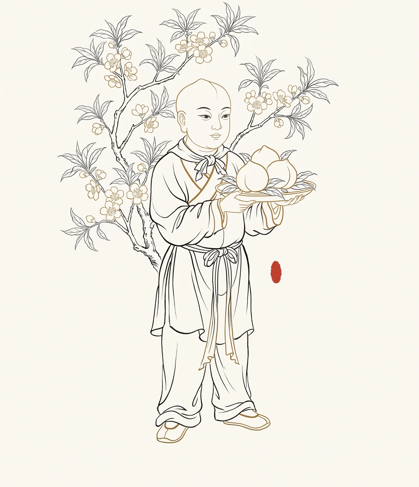

蟠桃园：那个有三千六百株桃树的体制内，藏着什么秘密？

W286（git 创建提交溯源 · W424 回填） 核验状态：未核验
《西游记》第五回，孙悟空被玉帝封为"齐天大圣"——一个"有官无禄"的空衔。为了给他找点事做，玉帝让他"权管那蟠桃园"。
让一只猴子管理桃园。这个决定本身就充满了某种黑色幽默。但天庭的人似乎完全不觉得有问题——或许在天庭的逻辑里，"齐天大圣"只是一个需要被安置的麻烦，给他一个园子管着，别到处惹事就行。
于是悟空高高兴兴进了蟠桃园。他不知道，这个园子有三道门：第一道门上写着"成熟"两个字，第二道门上写着"等级"两个字，第三道门上写着"虚空"两个字。他推开第一道门时还是齐天大圣，推开第三道门时，已经是大闹天宫的妖猴了。
第一道门：三千六百株的真相
蟠桃园里有多少桃树？原著写得很精确：
"前面一千二百株，花微果小，三千年一熟，人吃了成仙了道，体健身轻。中间一千二百株，层花甘实，六千年一熟，人吃了霞举飞升，长生不老。后面一千二百株，紫纹缃核，九千年一熟，人吃了与天地齐寿，日月同庚。"
三千六百株。三个等级。三千年、六千年、九千年。效果依次递增——从"成仙了道"到"霞举飞升"到"与天地齐寿"。
这个布局极其巧妙。它不是一个均质的园子，而是一个有着明确差序格局的空间。你从外面走进去，越往里走，桃树越珍贵。最外面的是基础款，中间的是进阶款，最里面的是至尊款。每一千二百株之间，没有围墙，没有守卫——但那个界限无比清晰。土地爷会告诉你哪些能吃哪些不能碰，七仙女来摘桃子时也是按照"先熟先摘"的规矩。
这是一个标准的层级制结构。 什么层级、什么位置，对应什么资源、什么待遇。位置决定你吃到的是三千年还是九千年的桃子。而决定位置的，不是你，是分配系统。
在天庭，这个分配系统就是蟠桃会。每年的蟠桃会是天庭最盛大的社交活动——注意，是"会"，不是发给每个神仙自己吃的。它是集体分配。邀请谁、座位排哪里、吃哪个等级的桃子——每一个细节都对应着天庭政治秩序中的位置。吃到什么桃子，就是什么身份。没被邀请？那就是边缘人。
悟空并不知道这些。他进园子第一天，土地爷介绍情况时，他的反应是什么？原文写悟空"欢喜无限，自此后，三五日一次赏玩，也不交友，也不他游。"
他被三千六百株桃树迷住了。他没有意识到他进入的不是一个园子，而是一个等级系统。
第二道门：从"尝新"到"失控"
悟空开始吃桃子。最初是"尝新"——尝个鲜，试个味。土地爷没有拦他，因为他管这片园子，吃几颗桃子似乎是默许的。
但"尝新"很快就变成了"随意享用"。原文写他"迟三朝，早两日，在树枝上拣那熟透的大桃，摘了许多，自在受用"。拣那熟透的大桃——这是关键句。三千年、六千年、九千年，等级再森严，抵不过一个"熟"字。猴子不管你是几千年一熟的，他只管你现在熟了没有。熟了，就摘。
这暴露了等级系统的一个致命缺陷：它是按"品类"分配，而不是按"当下状态"分配。系统预设每一棵树都按固定的时间表成熟，但自然并不总是服从系统的安排。一只猴子跳进来，打破了所有预设。
然后，更严重的事发生了。七仙女奉王母之命来摘桃子准备蟠桃会。悟空问她们，蟠桃会请了谁。七仙女报了一长串名字——"西天佛老、菩萨、圣僧、罗汉，南方南极观音，东方崇恩圣帝、十洲三岛仙翁，北方北极玄灵，中央黄极黄角大仙......"
悟空听了半天，问了一句："可请我么？"
仙女说："不曾听得说。"
就是这一句。 七仙女说的是实话，她们只是按照名单办事。但这句话砸在悟空耳里，是天庭政治的全部冷酷：你以为自己是齐天大圣，但在蟠桃会的名单上，你什么都不是。
前面吃桃子是违规，但土地爷可以睁一只眼闭一只眼——管理者吃点公家的东西，哪个系统没有这种事？但当悟空发现自己根本不在邀请名单上时，违规变成了愤怒，愤怒变成了破坏。
他定住了七仙女，偷光了蟠桃会上的仙酒仙肴，跑到兜率宫吃了太上老君五壶金丹。然后他知道自己闯大祸了，逃回了花果山。
从"监守自盗"到"彻底决裂"，转折点不是桃子，而是那句"不曾听得说"——不是贪婪，是尊严。
第三道门：为什么是蟠桃园
回过头来看，"让猴子管桃园"这个安排，到底是谁的主意？
原著里写得很简单：玉帝封了齐天大圣之后，"一日，早朝，许旌阳真人俯囟启奏道：'今有齐天大圣，无事闲游，结交天上众星宿，不论高低，俱称朋友。恐后闲中生事，不若与他一件事管，庶免别生事端。'玉帝闻言，即时宣诏，叫他权管那蟠桃园。"
这是许旌阳的主意，玉帝批的。动机写得很明白：不是觉得悟空有这个能力，是怕他"闲中生事"，给他一件事做，占用他的时间精力，他就没工夫到处交朋友、惹麻烦了。
用"给事做"来控制人。 这几乎是古今中外一切大型组织的标准操作。一个有能力但暂时不好安置的人，给个闲职，给个独立管理的园子，让他觉得自己被重用了，实际上是被隔离了。
但玉帝犯了一个错误——或者说，这个安排本身就包含着一个必然失败的逻辑：你想用蟠桃园困住一只猴子，但猴子进了蟠桃园，就像鱼入了大海。你给了他最想要的东西，却期待他自律。
《西游记》没有写玉帝是否意识到这个矛盾。也许在天庭的逻辑里，神职人员的自我约束是预设的——你是神仙，你当然懂得克制。但悟空不是神仙，他刚刚才被封为"齐天大圣"，骨子里还是花果山的野猴子。天庭的规则他不懂，也不想懂。玉帝用天庭的逻辑管理一只不在天庭逻辑里的猴子，结果只有一个。
悟空大闹天宫，蟠桃园的故事到这里就结束了。但我们往深里看一层：这个故事从头到尾，都是天庭自己制造的。许旌阳怕悟空"闲中生事"，给了他一个园子；玉帝封悟空为齐天大圣却不给他真正的地位，导致他不被邀请到蟠桃会；蟠桃会不请他，他就要掀翻蟠桃会。
每一个环节，都是天庭在为自己的傲慢买单。
蟠桃园之后：我们还在园子里吗
几百年过去了，"蟠桃园"已经从神话变成了隐喻。
今天我们谈论职场中的层级、晋升通道、资源分配、年终考核——这不就是蟠桃园的现代版吗？有人管着三千六百株桃树，有人等着蟠桃会的邀请函，有人在园子外面连门都进不来。有人以为自己在"管桃园"，实际上只是被圈在了一个不用参与核心决策的安全位置上。
学校也是蟠桃园。成绩排名的前一千二百株、中间一千二百株、后面一千二百株——三千年一熟的是合格，六千年一熟的是优秀，九千年一熟的是顶尖。每年都有考试（蟠桃会），分配下一阶段的门票。
悟空面对蟠桃园的反应给了我们一个永恒的选择：当你发现自己在园子里吃桃子时，你会怎么做？
是按规矩来，看管好园子，等着被邀请到更大的桌子上？是一边管园子一边偷吃几颗——不挑战系统，但最大化个人利益？还是像悟空一样，发现自己根本不在名单上时，直接掀桌子走人？
这三种选择，《西游记》没有说哪个是对的。悟空选择了第三种，代价是被压在五行山下五百年。但当他从山底下出来，跟着唐僧走上取经路时，他也不再是那个以为"管蟠桃园就是被重用"的猴子了。他见过了天庭的傲慢，也尝过了自己的冲动。他开始学会——不是低头，而是理解规则然后找到自己的路。
他最终成了佛，而佛不在蟠桃园的邀请名单上。佛在另一个系统里。
跋
蟠桃园的故事让我们看到，最精致的系统也有最脆弱的开关。一只猴子，就能让它暴露全部的傲慢与盲点。
但更重要的是，悟空的故事没有结束在蟠桃园。他被压了五百年，然后重新出发，用另一种方式完成了自己。真正的成长不是永远不犯错，而是犯错之后重新上路时，口袋里装着对自己和这个世界的更深理解。
蟠桃会年年还在开。三千六百株桃树照常开花结果。七仙女照常来摘桃子。名单上还是那些名字。一切似乎都没变。
只有那只大闹过天宫的猴子不在名单上了。他在走一条更长的路，一条不需要邀请函的路。
延伸思考
- 在你所处的环境（学校/家庭/社交圈）中，是否有类似"蟠桃园三个等级"的隐形分级？你是如何意识到它的存在的？
- "让猴子管桃园"——你有没有遇到过明明不适合某个位置却被放在那里的情况？或者你自己就曾是这样一只"管桃园的猴子"？
- 悟空面对不被邀请到蟠桃会的反应是掀桌子。如果是你，你会怎么处理被排斥或忽视的感受？什么情况下"掀桌子"是合理的，什么情况下不是？